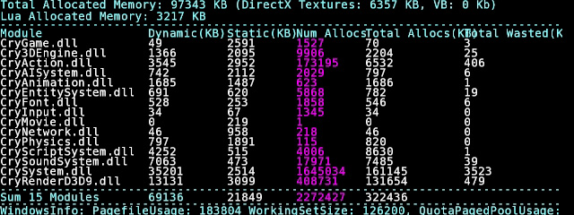

Overview
This article talks about high level topics related to all kinds of memory (main, video, HDD, DVD, etc).
Main Memory and GPU Memory
Developing for consoles (e.g. Xbox 360, Playstation 3) is challenging because of the limited amount of memory. This problem exists on PC as well but usually the limits are less tight and the problem there is rather the various properties of the installed hardware. From a production point of view it is tempting to use some low spec PC setting for the consoles but usually this is not sufficient because the expectations for console quality are higher. This is due to the stronger competition on consoles. Some game developers dedicate all the effort on a single platform and that raises the expected quality bar there. However, because of the fixed hardware and the big market this can pay off.
Choosing a Platform to Target
Even if multiple platforms are targeted for production, it is often better to stick to one development platform. Using the platform with the strongest memory limits eases production in the long run but it can degrade the quality for the others. Some global code adjustments (e.g. TIF setting "globalreduce", TIF preset setting "don't use highest LOD") can help reducing memory but often more asset-specific adjustments are needed (e.g. TIF setting "reduce"). Sometimes even that isn't enough and completely different assets are required (e.g. all LODs of some object are different for console and PC). This can be done through a CryPak feature. It is possible to bind multiple pak files to some path and basically they behave as layered. This way it is possible to customize some platforms to use different assets. The platform that uses multiple layers has some overhead (memory, performance, I/O) so it is better to do that on the stronger hardware.
Budgets
Budgets are mostly game specific because all kinds of memory (e.g. video/system/disk) are shared across multiple assets and it depends on the game how to utilize the memory. It's a wise decision to dedicate a certain amount of memory to similar types assets. For example, if all weapons roughly cost the same amount of memory, the cost of a defined number of weapons is predictable and with some careful planning in production, late and problematic cuts can be avoided.
Allocation Strategy with Multiple Modules and Threads
Our memory manager tries to minimize fragmentation by grouping small allocations of similar size. This is done in order to save memory, allow fast allocations and deallocations and to minimize conflicts between multiple threads (synchronization primitives for each bucket). Bigger allocations run through the OS as that is quite efficient. It is possible to allocate memory in another than the main thread but it might not be the best practice for having easily readable code. Allocations done in one module should be deallocated in the same module. Violating this rule might work in same cases but statistics (per module allocation) will be broken, so that should not be done. The simple Release() method ensures objects are freed in the same module. The string class (CryString) has this behavior built in which means the programmer doesn't need to think where the memory gets released. The following image shows the allocations statistics split up by the different modules:

Caching Computational Data
In Far Cry (CryENGINE 1) we did skinning (vertex transformation based on joints) of characters in software. The vertex data was sent to the graphics card and was also used to create edge information for the stencil shadows. Doing skinning once and reusing it for multiple passes and for shadow computations was a good solution at that time. More detailed characters require more triangles and have therefore more vertices. This means more computations on CPU side and more bus transfers. For Crysis (CryENGINE 2) we have dropped the stencil shadows and do skinning on GPU. The GPU is generally faster in doing the required computations and the transfer is avoided. Caching the skinned result is still possible but graphics hardware is often more limited on the memory side and is stronger on the computations. Here it can makes sense to recompute the data for every pass. This way we even don't need to manage the memory for the cache. The latter advantage is good because in a dynamic game scene the character count can vary a lot.
See also: Static vs. Dynamic Lighting
Compression
There are many lossy and lossless compression techniques that work efficiently for a certain kind of data. They differ in complexity, compression and decompression time (can be asymmetric). Compression can introduce more latency and only very few techniques can deal with broken data (e.g. packet loss, bit-flips).
Disk Size
Installation time for modern games on PC can be huge. Avoiding installation all together is tempting but DVD performance is much worse than hard drive performance, especially with random access patterns. On consoles there are restrictions on game startup times and requirements for a title to cope with a limited amount of disk memory or no memory at all. Assuming the game is just to big to fit into memory, streaming is required.
Total Size
To keep the total size of a build small, the asset count and the asset quality should be reasonable. For production it can make sense to create all textures in double resolution and downsample the content with the Resource Compiler. This can be useful for cross platform development and it also allows to re-release the content later with higher quality. It also eases the workflow for artists as they often create the assets in higher resolutions anyway. Also, the engine can render cut-scenes with the highest quality if needed (e.g. for creating videos).
Many media have a maximum space but using the whole medium can cost more than just a part of it (e.g. another layer on a DVD). Redundancy might be a good solution to minimize seek times (e.g. storing all assets of one level in one block).
Address Space
Most Operating Systems (OS) are 32bit which means simplified an address in main memory has 32 bits which results in 4 GB of addressable memory. Unfortunately, to allow relative addressing with a negative sign the top bit is lost which leaves only 2 GB to the application. Some OS can be instructed to drop this limitation and more memory becomes available (application compiled with large address awareness). The full 4 GB cannot be used because the OS also maps things like the GPU memory into the space. When managing that memory, another challenge appears. Even if 1 GB memory is free you might not be able to allocate 200 MB - simply because there is no continuous block of free space in the virtual address space available. In order to avoid this problem, memory should be managed carefully. Good practices are:
- Prefer memory from the stack with constant size (SPU stack size is small, see our documentation on SPU programming).
- Allocating from the stack with dynamic size with alloca() is possible (even on SPU) but it can introduce bugs that can be hard to find.
- Allocate small objects in bigger chunks (flyweight design pattern).
- Avoid reallocations (e.g. reserve and stick to maximum budgets).
- Avoid allocations during the frame (sometimes simple parameter passing can cause allocations).
- Ensure that after processing one level the memory is not fragmented more than necessary (test case: loading multiple levels one after another).
64 bit address space is a good solution for the problem - if available. This requires a 64 bit OS and running the 64 bit version of the application. Running a 32 bit application on a 64 bit OS only helps very little. Note that compiling for 64 bit can result in a bigger executable size and that can be counter productive in some other ways.
Bandwidth
In order to reduce the memory bandwidth usage, it is required to make good use of the caches (e.g. memory local access pattern, keeping right data nearby, smaller data structures) or to avoid memory accesses all together (recomputing instead of storing and reading).
Latency
Different types of memory have different access performance characteristics. Latency is the time between requesting some data and obtaining it. Careful planning on where data is stored can help to improve performance. For example: Blending animation for the run animation needs to be accessible within a fraction of a frame and needs to be in memory but cut-scene animations can be stored on disk. Code might require extra effort to make it work with higher latency. This effort is not always worth the benefit.
Alignment
Some CPUs require proper alignment for data access (e.g. reading a float requires an address dividable by 4), other CPUs perform slower with unaligned data (misaligned data access). As caches operate on a bigger granularity, the cache lines (e.g. 64 or 128 bytes), there are benefits to align data to that size. This is why we try to keep some of our data structures that require random access in sizes like 128 or 256 bytes. Adding a small feature can break these structure sizes and it might be only noticeable on some low spec machine with heavy workload. In the worst case the feature might even not be enabled on that machine. Again, this shows why careful planning of data structures is important.
Virtual Memory
The OS usually tries to handle memory quite conservative as it never knows what memory requests come next. This results in the strange behavior that code or data that has not been touched for a while can be paged out to the hard drive. This can result in stalls that can appear randomly in some code that you would not expect to stall. This behavior is bad for games and therefore consoles avoid it by not doing any swapping.
Streaming
Streaming enables the game to simulate a world that is bigger than limited memory would allow otherwise. A secondary, usually slower medium is required and the limited resource is used as a cache. This is only possible because at a given point in time only part of the content is required and that set of assets is only changing slowly. To reflect the limits that the hardware defines, we need to limit the set we keep in memory as well. This can be partly done by code but it also requires effort from designers (placement of assets, decision which assets are used, reuse of assets, occlusion, streaming hints). Latency of streaming can be an issue when huge changes to the set of required assets are necessary. Hard drives generally do much better on seek times than most other large-storage media like DVDs, Blue-Rays or CDs. Sorting assets and keeping redundant copies of them can help to improve performance.
Split screen or general multi-camera support add further challenges for the streaming system as tracking the required asset set is getting more difficult. Seek performance can get get worse as now multiple sets need to be supported by the same hardware. It is wise to limit gameplay so that the streaming system can do a better job. A streaming system works best if it knows about the assets and when they are needed beforehand. Game code that just loads assets on demand without registering it before does not support that. It is better to wrap all asset access with a handle and allow registration and creation of handles only during some startup phase. This way it is also much easier to create stripped down builds (minimal build only consisting of required assets).